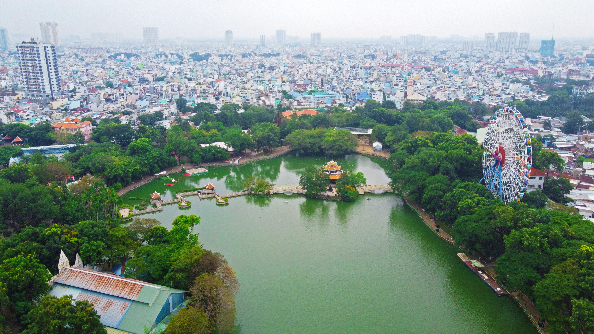

Công viên Văn hoá Đầm Sen là công viên giải trí nằm trên đường Hòa Bình, Quận 11, Thành phố Hồ Chí Minh. Công viên có diện tích 50 hecta gồm 20% là mặt hồ và 60% cây xanh và vườn hoa.
Các Thông tin chi tiết về Công viên Văn hóa Đầm Sen
Lịch sử hình thành:
|
Trước năm 1975, mảnh đất thuộc Công viên Văn hóa Đầm Sen hiện nay là một khu đầm lầy bỏ hoang.
Các đặc điểm chính:
|
Toàn công viên trải dài trên một diện tích rộng gồm 30 khu vực: Khu trò chơi điện tử, Sân khấu cổ tích, Lâu đài cổ tích, Sân khấu quảng trường, Hồ Tây thu nhỏ, Nam tú thượng uyển, Non bộ - thủy cung, Đảo khiêu vũ, Nhà sinh vật biển, Rối nước, Vườn chim thiên nhiên, Chùa cổ Giác Viên, Vườn bướm thiên nhiên (đã đóng cửa), Khu câu cá, Khu trưng bày kỳ long, Quán trà đạo, Khu trò chơi mạo hiểm, Hồ thiên nga, Hồ ngựa phi, Vườn hoa châu Âu, Quảng trường La Mã, Quảng trường văn hoá, Sân khấu nhạc nước, Khu bowling, Khu dịch vụ thể thao, Hồ câu tôm, Nhà hàng thủy tạ, Khu trò chơi thiếu nhi, Đèn tạo hình, Cầu cửu khúc, Nhà ga Monorail, đường ray Monorail, câu cá sấu, băng đăng...
Một hòn non bộ cao 22m với nhiều thác ghềnh, hang động mà tầng hang động lớn nhất được bố trí thành thủy cung với đủ các loài cá nhiều màu. Rồi Nam tú thượng uyển với một hệ thống vườn phong lan, các loại cây cảnh bonsai phong phú và đa dạng. Với đối tượng thiếu niên ưa hiếu động trong công viên có khá nhiều sân chơi hấp dẫn: sân trượt patanh, xe ô tô điện, tàu trượt cao tốc, công viên nước...
Sân khấu Laser Nhạc Nước được xây dựng năm 2005 với số vốn đầu tư 12 tỷ đồng, vị trí nằm phía sau vườn hoa châu Âu, sân khấu có mái che với sức chứa 3.000 chỗ ngồi. Sân khấu Laser Nhạc Nước là một loại hình nghệ thuật độc đáo, hiện đại, duy nhất tại Việt Nam mà các kỹ sư Đầm Sen đã học được từ mô hình nhạc nước ở đảo Sentosa (Singapore).
Một số hình ảnh tiêu biểu về Công viên Văn hóa Đầm Sen:
|

|